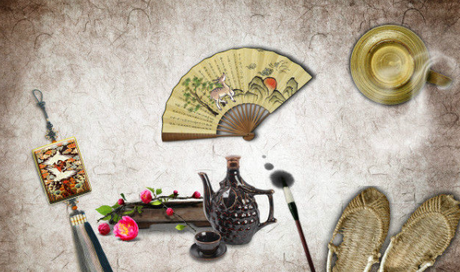

作为一个示利来判断css3样式表的调用
div盒子1
莫高电平时赶 ，紧乌拉框架
盒子边框宽
渐变色出来
段落内边距为父元素宽度5%
中国传统文化，是民族文明、风俗、精神的总称。“文化”的定义，往往是“仁者见仁，智者见智”。简单地说，中国传统文化以儒佛道三家为主干 [1] 。三者相互依存，相互渗透，相互影响，构筑中国传统文化的整体。这三家传统文化之思想，在中国合称为“三教”。 [2] 中国传统文化，依据中国历史大系表顺序 [3-4] ，经历了有巢氏 [5-6] 、燧人氏、伏羲氏、神农氏炎帝 [7] 、黄帝轩辕氏 [7] 、尧、舜、禹等时代 ，《先秦史》云：“吾国开化之迹，可征者始于巢、燧、羲、农。” [3-4] ；到夏朝建立。之后绵延发展至今。 中国传统文化中的儒家文化主张“积极进取、建功立业”，为历代儒客尊崇；而且道家文化主张“顺其自然、自我完善”；佛家文化主张“慈爱众生、无私奉献” [2] [8] 。